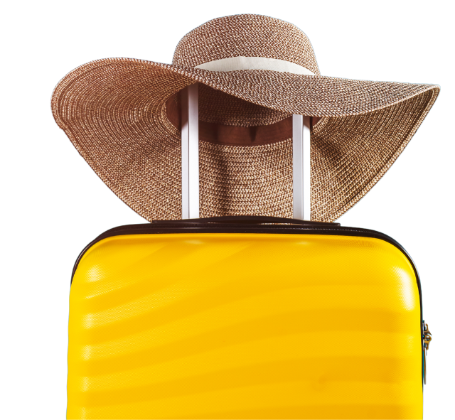

Experience the Culture, History, and Natural Wonders of Bulacan
Start Your JourneyDiscover the best of Bulacan with our carefully curated destinations that showcase the province's rich history, vibrant culture, and breathtaking nature.
Barasoain Church
Malolos
The Cradle of Philippine Democracy
Biak-na-Bato National Park
San Miguel
Where History Meets Nature
Biak-na-Bato National Park
San Miguel
Where History Meets Nature
Biak-na-Bato National Park
San Miguel
Where History Meets Nature
Biak-na-Bato National Park
San Miguel
Where History Meets Nature
Biak-na-Bato National Park
San Miguel
Where History Meets Nature
Your Personalized Travel Guide to Bulacan
Create your dream trip to Bulacan with our easy-to-use itinerary planner. Choose from must-see destinations, hidden gems, and exciting activities tailored to your preferences.
Itenerary Planner
Add destinations to your itinerary with a single click.
Get recommended travel routes and durations.
Save, edit, and share your itinerary with friends and family.
From colorful festivals to cultural events, find out what's happening in Bulacan all year round. Our events calendar keeps you updated so you can join the fun.